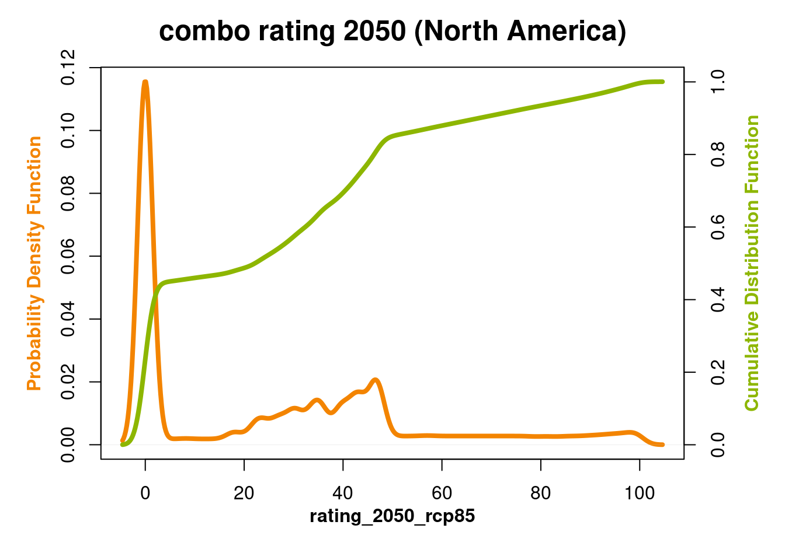

HURRICANE VALIDATION
2023-03-15
METHODS
The ClimateCheck hurricane risk rating represents a composite of hazards related to hurricane events. These include high winds, storm surge and pluvial flooding. Below are our target statistics and ratings with associated source datasets as well as a process for estimating each hazard and its components.
STATISTICS
Annual hurricane probability. HURDAT2 historical hurricane tracks are sufficient since there is high uncertainty around changing probabilities by place.
Hurricane flood depth:
Pluvial flood depths from WCA2D (Guidolin et al. 2016) historical and projected modeling. Pluvial flood return periods mapped to annual hurricane probability.
Storm surge flood depths from SLOSH. Modeled current storm surge hazard adjusted by surge tide projected estimates from Gori et al. (2022)
- Hurricane wind intensity. Historical windspeeds adjusted by a change factor from modeled tropical cyclone maximum velocity from Gori et al. (2022)
RATINGS
Hurricane flood risk rating based on maximum depth across flood types.
Hurricane wind risk rating based on wind speed intensity.
Hurricane risk rating as a composite index of hurricane flood and wind risk ratings.
PROCESS
We use NOAA HURDAT2 historical hurricane tracks (vector points) from 1851-2021. Coastal states are grouped and buffered with a 200km radius. We use a peaks over threshold approach to gather exceedances per event and per state grouping (???) that lay beyond 64 kt (74 mph)–this corresponds to the minimum windspeed for a tropical cyclone to be categorized as a hurricane. Return periods and levels are based on the Generalized Pareto Distribution. The annual probability of a hurricane passing by each region has a Poisson Distribution.
To find projected max windspeeds, we apply a change factor to the historical data from the relative change in modeled tropical cyclone maximum velocity from Gori et al. (2022). These data come as 25km spaced point estimates along the US East and Gulf of Mexico coasts, which we then rasterize and interpolate for cells affected by historical hurricanes. The extreme value analysis described above is repeated for the projected windspeeds.
Flood mapping uses a 10m digital elevation model (DEM) from a mosaiced product of the USGS National Elevation Dataset (NED) and NOAA Continuously Updated Digital Elevation Model (CUDEM). We take storm surge depths from the NOAA SLOSH model, which represent Maximum Envelopes of Water (MEOWs) and Maximum of MEOWs (MOMs). MEOWs are created by computing the maximum storm surge resulting from up to 100,000 hypothetical storms simulated through each SLOSH grid of varying forward speed, radius of maximum wind, intensity (Categories 1-5), landfall location, tide level, and storm direction. MOMs are an ensemble product of maximum storm surge heights created for each storm category by retaining the maximum storm surge value in each grid cell for all the MEOWs, regardless of the forward speed, storm trajectory, or landfall location. A high tide initial water level was used for the storm surge maps.
Projected storm surge depths are found by applying a change factor to the SLOSH maps from the absolute change in modeled surge tide from Gori et al. (2022). We rasterize this relative change and interpolate for cells with SLOSH surge depths. This produces a change in vertical extent. To represent change in horizontal extent we:
- sum projected surge depths with the DEM
- smooth the summed layer
- difference the DEM from the smoothed layer
Historical and projected pluvial flood depths for the 100 and 500 year return periods are mapped onto hurricane event frequencies. These flood depths come from the open-source cellular automata-based Weighted Cellular Automata 2D (WCA2D) model. Initially developed for small area urban surface water runoff and sewer network simulations (Austin et al. 2014), WCA2D has expanded to become a generalizable tool for high resolution precipitation-based flood modeling (Guidolin et al. 2012, 2016; Ghimire et al. 2012).
A maximum flood depth from the combined storm surge and pluvial flood models is taken and masked for cells representing surface water. We estimate the hurricane risk rating as equal parts risk from the wind intensities and flood depths.


 [inverse distance weighted interpolation]
[inverse distance weighted interpolation]


 [inverse distance weighted interpolation]
[inverse distance weighted interpolation]


HIGH RES FLOOD AND WIND


100yr
rcp85


 [inverse distance weighted interpolation]
[inverse distance weighted interpolation]




after water mask


Austin, Rebecca J., Albert S. Chen, Dragan A. Savić, and Slobodan Djordjević. 2014. “Quick and Accurate Cellular Automata Sewer Simulator.” Journal of Hydroinformatics 16 (6): 1359–74. https://doi.org/10.2166/hydro.2014.070.
Ghimire, Bidur, Albert S. Chen, Michele Guidolin, Edward C. Keedwell, Slobodan Djordjević, and Dragan A. Savić. 2012. “Formulation of a Fast 2D Urban Pluvial Flood Model Using a Cellular Automata Approach.” Journal of Hydroinformatics 15 (3): 676–86. https://doi.org/10.2166/hydro.2012.245.
Gori, Avantika, Ning Lin, Dazhi Xi, and Kerry Emanuel. 2022. “Tropical Cyclone Climatology Change Greatly Exacerbates US Extreme RainfallSurge Hazard.” Nature Climate Change 12 (2): 171–78. https://doi.org/10.1038/s41558-021-01272-7.
Guidolin, Michele, Albert S. Chen, Bidur Ghimire, Edward C. Keedwell, Slobodan Djordjević, and Dragan A. Savić. 2016. “A Weighted Cellular Automata 2D Inundation Model for Rapid Flood Analysis.” Environmental Modelling & Software 84 (October): 378–94. https://doi.org/10.1016/j.envsoft.2016.07.008.
Guidolin, Michele, Andrew Duncan, Bidur Ghimire, Mike Gibson, Edward Keedwell, Albert S. Chen, Slobodan Djordjevic, and Dragan Savic. 2012. “CADDIES: A New Framework for Rapid Development of Parallel Cellular Automata Algorithms for Flood Simulation,” July.